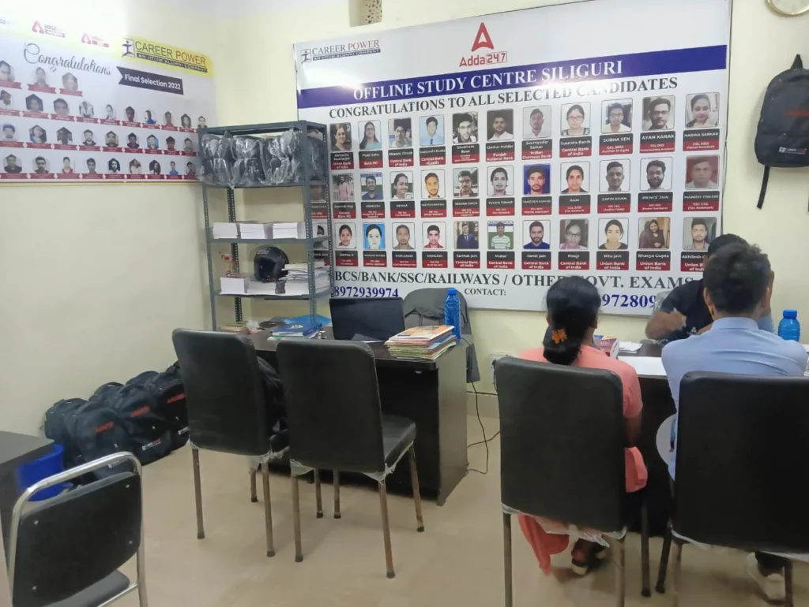
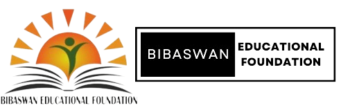

Preparing for competitive exams can seem rather difficult, just like climbing a mountain. While some choose to study alone, valuing the freedom and flexibility it provides, others prefer the organized guidance and discipline that coaching centers offer. In other words, each student has their own approach to preparation.
In recent years, Siliguri has become a center for competitive exam candidates from local and nearby hill regions. This growth is due to the rising number of institutes in the region that focus on offering specialized coaching for government exams.
How to Choose the Right Coaching Centre?
Choosing the right coaching institute can be difficult, here are some key points to keep in mind while choosing a good coaching centre:-
Type of Exam: Begin by determining the exams you wish to prepare for — SSC, Banking, UPSC, Railways, or state-level exams. Select a centre that deals with those exam courses.
Faculty Expertise: Seek experienced and subject-specific faculty members. A good teaching faculty guarantees conceptual clarity and improved doubt clearing.
Track Record: Centres with a good track record of performance tend to reflect a strong curriculum and teaching approach.
Study Materials and Test Series: Good study material and frequent mock tests in line with the new exam patterns are essential.
Learning Mode: Most centres now provide hybrid models (online and offline). Pick what is convenient for your schedule and learning style.
Demo Classes & Reviews: Try to attend a demo class if at all possible. Also, read reviews online or speak with past students to have genuine feedback.
So, with the right support system, staying focused and exam-ready becomes much easier, here’s the list of government job coaching centres in Siliguri:-
Mahendra’s Institute
![A group of ten individuals is captured in a brightly lit indoor setting, likely an office, as they pose for a photograph around a small, round table adorned with a colorful birthday cake. The group comprises six women and four men, all seemingly in good spirits.
The woman positioned centrally in the front row stands out; she is clad in a light brown or beige saree draped over a white blouse and secured with a safety pin at the shoulder. She wears a lanyard around her neck holding an identity card. To her left, another woman is dressed in a white kurta featuring a vibrant, abstract design in red, yellow, and blue hues, paired with dark leggings. The woman to the right of the saree-clad individual is wearing a royal blue kurta with matching pants. The remaining women in the back row are dressed in a mix of traditional and Western attire, including a black and white patterned kurta.
The men are dressed in casual and semi-formal wear. One man on the left sports a white t-shirt with a green, white, and orange ribbon pinned to it, along with khaki pants. Another man in the back row wears a light blue collared shirt. To the right, a man is seen in a light blue t-shirt and jeans, while the man on the far right is dressed in a crisp white shirt, a dark tie with white stripes, and dark trousers. Most individuals in the photograph are wearing lanyards with identification cards.
The backdrop of the image features light green walls, a glass-paneled door, and a whiteboard. On the right side, a poster or signage with text and logos, including what appears to be "Mahendra's," is visible. The overall ambiance suggests a celebratory occasion, likely a birthday, within a professional environment.](../wp-content/uploads/2025/05/1-1024x768.webp)
Mahendra’s is one of the oldest and trustworthy coaching institutes of India that offers comprehensive preparation for government exams with experienced faculty and extensive study materials. They provide both online & offline classes, conducts regular tests, guest lectures at affordable prices.
Exams Covered: Banking (IBPS PO, Clerk, RRB, SO, SBI PO, Clerk, RRB, RBI Grade B), SSC (CGL, CHSL, CPO, MTS, RRB NTPC)
Contact Number: 7063682939
Website: branch.mahendras.org
Address: 3rd Floor, Sanat Trade Centre, Sevoke Road, Above Bank Of Maharashtra, Siliguri
The Dhronas

The Dhronas is another great coaching center in Siliguri, providing coaching for competitive exams. Being known for high-quality teaching, both offline and online manner, frequent mock tests, free study material, and interview training, they have won the confidence of numerous aspirants in the region.
Exams Covered: WBCS, WBPSC, WBP SI & Constable; SSC CGL, CHSL, CPO, MTS, GD, IBPS PO, SO & Clerk; SBI PO; RRB PO, RRB Clerk, RBI Grade B; CDS, NDA, CTET, Airforce
Contact Number: 8436900456
Website: www.thedhronas.com
Address: Flat No. 43, AT Mukherjee Road, Near SBI ATM, College Para, Siliguri
Avision Institute

The Avision Institute is one of the well-known coaching centers in Siliguri that offers individualized guidance for all Indian government exams. The institute has qualified teachers and offers free demo class, updated study materials, online mock test series, live video classes, and doubt-clearing sessions on a regular basis to provide all-rounded support to the students while undertaking professional exam preparations.
Exams Covered : IBPS PO, Clerk, SO, RRB, SBI PO, Clerk, SO, RBI Grade B, Assistant; SSC CGL, CHSL, CPO, MTS, GD, JE, RRB NTPC, ALP, JE, Group D, SI, LIC AAO, ADO, Assistant, ADO, NIACL AO, Assistant; CET; WBCS,CDS, NDA
Contact Number: 7602555048
Website: https://avision.co.in/
Address: Sarker Mention Building, Opposite Panchayat Office, Panchayat Road, Shivmandir, Kadamtala, Siliguri
Study Xpress
![The image shows a group of about fifteen people posing for a selfie in what appears to be an office or community space. The group includes both men and women, who seem to be of South Asian descent, given the clothing and the location context. They are dressed in a mix of casual and traditional Indian attire. The person taking the selfie is a man in a suit jacket and glasses. The room has light green walls and a doorway is visible in the background. A laptop is placed on a table in the foreground.](../wp-content/uploads/2025/05/unnamed-3-1.webp)
Study Xpress is also one such reputed coaching institute based in Siliguri providing high-level expert coaching for a host of government and competitive examinations. The institute also offers free demo class with experienced teachers with subject matter expertise and has the additional advantages of offline as well as online classes, study material upgraded periodically, test series, and revision classes to help all the students excel in their course.
Exams Covered: SSC CGL, CHSL, MTS, JE, IBPS PO, Clerk, SBI PO, Clerk, RBI Grade B, Assistant, RRB NTPC, ALP & Technician, JE, Group D, RPF
Contact Number: 8961189005
Website: www.studyxpress.co.in
Address: Gate No. 2, 5, Baghajatin Road By Lane, Opposite Siliguri College Road, College Para, Siliguri
RICE Education
![Six men are standing together outdoors, posing for a photograph in front of a backdrop featuring the logo "RICE Education" and "ricesmart." The men appear to be of South Asian descent. They are dressed in a mix of formal and semi-formal attire, including suits, blazers, shirts, and trousers. The backdrop has red and white banners with the logos and some graphical elements. Behind the backdrop, there is a building with intricate carvings and a partially visible blue painted section. To the left, some greenery and a parked car are visible, suggesting an outdoor setting during daylight.](../wp-content/uploads/2025/05/unnamed-1-1-1-1024x913.webp)
RICE Education is one of the oldest and most respected competitive exam coaching institutes in West Bengal, established in 1985. The Siliguri branch offers both online and offline coaching for various central and state government exams. With experienced faculty, structured study material, doubt-clearing sessions, and interview preparation, RICE continues to guide students toward success in public service careers.
Exams Covered: WBCS, UPSC, SSC CGL, CHSL, MTS, JE, IBPS PO, Clerk, SBI PO, Clerk, RBI Grade B, Assistant, RRB NTPC, ALP & Technician, JE, Group D, RPF, LIC AAO, ADO, CDS, NDA, CTET
Contact Number: 8479917965
Website: www.riceeducation.in
Address: By lane 5, Bagha Jatin Park, Opposite Siliguri College, 2nd Gate, Siliguri
Career Power

Adda24x7, operating under the brand name Career Power in Siliguri, is a reputed coaching institute offering dedicated preparation for major government exams. The center is equipped with experienced faculty, updated study material, online test series, live video classes, and doubt-clearing sessions. It also offers educational apps and guest lectures to help aspirants achieve their career goals with confidence.
Exams Covered: IBPS PO, Clerk, SO, RRB, SBI PO, Clerk, SO, RBI Grade B, Assistant, SSC CGL, CHSL, CPO, MTS, GD.
Contact Number: 8972939974
Website: www.careerpower.in
Address: Baghajatin Park, Court More Main Road, near SBI Court Branch, opposite Aastha Medical, Ward 17, Old Matigara, Siliguri
Bibaswan Educational Foundation

![The image shows a brightly lit classroom in Siliguri, West Bengal, India, filled with students diligently working at their desks. The walls of the classroom are painted a vibrant yellow. Most of the students are wearing face masks. Each student is seated at an individual desk with a red tabletop and a metal frame, working on papers. Ceiling fans are visible above. Natural light enters the room through a window on the left side, which has metal bars and red curtains. The overall atmosphere is focused and studious.](../wp-content/uploads/2025/05/2024-03-07-1.webp)
Founded in 2015, Bibaswan Educational Foundation is a renowned coaching center in Siliguri that provides intensive preparation for different central and state-level competitive exams. It offers both online and offline classes along with doubt-clearing and interview preparation classes with its team of experienced faculty members, personalized coaching, and structured mock test schedules.
Exams Covered: UPSC CSE, NDA, CDS, WBCS Executive, SSC CGL, CHSL, MTS, GD, CPO, Stenographer; IBPS PO, Clerk, SO, RRB, SBI PO, Clerk, RBI Grade B, Assistant; RRB NTPC, ALP & Technician, JE, Group D, RPF
Contact Number: 9641592339
Website: www.bibaswaneducationalfoundation.in
Address: 37, Nandalal Basu Sarani, College Para, Hakim Para, Siliguri
Things to Keep in Mind While Preparing for Competitive Exams
Success in competitive exams is not just about the coaching you choose—it’s also about how you approach your preparation. Keep these tips in mind as you prepare for the exams:
Stay Consistent, Not Just Motivated
Staying motivated is important, but consistency and maintaining discipline in daily study will bring progress.
Practice Regularly
Make practice papers and mock tests a part of your routine to enhance speed and accuracy.
Be Open to Alternative Career Paths
While keeping complete focus on exams is necessary, don’t limit your options and always have a backup plan. Also, explore skill-based, job-oriented courses that can help open doors to rewarding career opportunities.
While there are so many options in Siliguri, it’s important to take time to research, visit centres, check reviews and if possible, get the feedback of previous enrolled students and then select the right one.
And remember, no institute can guarantee success unless you stay consistent, disciplined and committed. Wishing you all the best in your preparation!

May 7, 2025